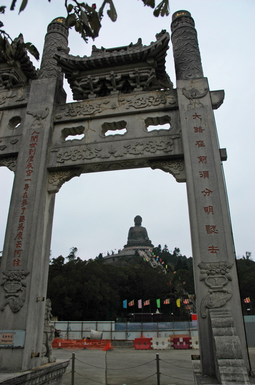
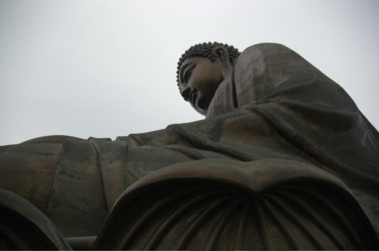
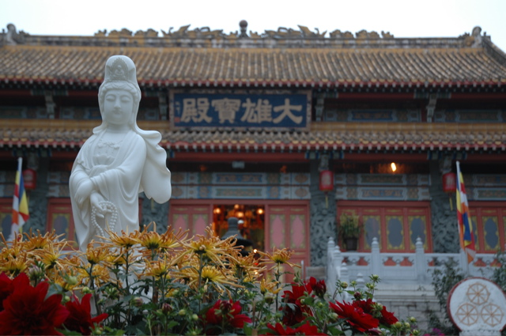

Nach vielen Stunden Warterei und dem ersten Flug sind wir mal wieder in Hong Kong gelandet. Um die Langeweile der acht Stunden Wartezeit bis zum Anschlussflug zu mildern, haben wir uns vorgenommen, den großen sitzenden Buddha vom Po Lin Kloster zu besichtigen – genau genommen ist es sogar der größte freisitzende Buddha der Welt.
In einem alten Taxi mit einem noch viel älteren Taxifahrer haben wir auf Umwegen Lantau durchquert. Das Kloster schien auf der Karte gar nicht so weit vom Flughafen entfernt zu sein. Die Insel erwies sich jedoch als sehr bergig, so dass wir erst von einer Küste zur anderen fahren mussten, bevor in die Mitte gelangten. Im Gegensatz zum urbanen Teil Hong Kongs sind die bewaldeten Hügel Lantaus kaum besiedelt; nur eine enge Landstraße verbindet hier die Dörfchen. Dafür gibt es auf der Südseite einen schönen Sandstrand und auf dem weiteren Weg zum Kloster das aufgestaute Trinkwasser-Reservoir - der unbeliebte Platz am Fuß des Damms beherbergt ein riesiges Zuchthaus.
Zum Buddha selbst haben wir es nur knapp vor Torschluss geschafft. Dennoch blieb uns Zeit, ein Blick in das Kloster zu werfen und die lange Treppe zur großen Lotusblüte hochzusteigen, in der der Erleuchtete Platz genommen hat. Von dort aus hat man einen schönen Blick auf die umliegenden Hügel und das Meer, in das der wolkenverhangene Himmel nahtlos überzugehen schien.
  
Für den Rückweg hatten wir wesentlich mehr Zeit. Daher haben wir uns für den Bus entschieden, in dem wir fast eine Stunde mit einer Unmenge beharrlich schweigender Chinesen zusammengepfercht saßen.